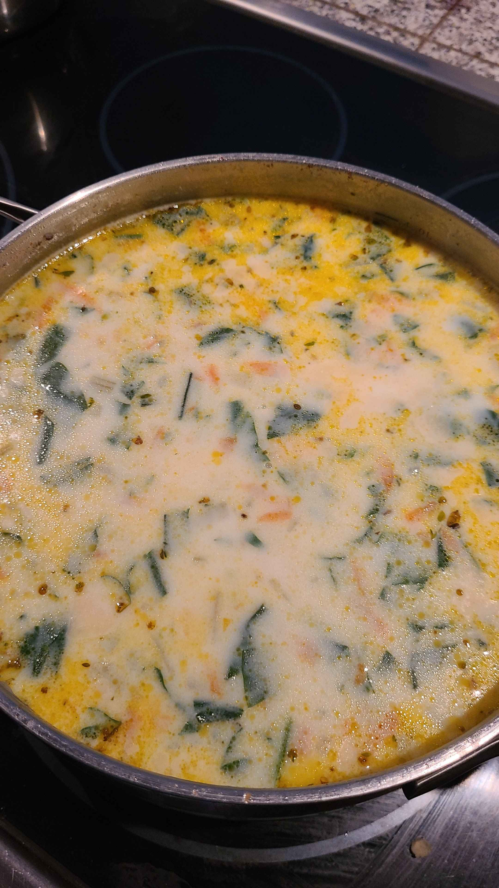

Ingredients
- 1 T - Olive Oil
- 3 T - Butter
- 1 stalk - Celery, sliced
- 1 cup - white onion, diced
- 1/2 cup - carrots, shredded
- 2 cloves - Garlic, minced
- 1/4 cup - All-purpose Flour
- 2-3 cups - chicken broth
- 2 cups - Half & half
- 1/4 tsp - Thyme, dried
- 1/8 tsp - Nutmeg, ground
- 2-3 - Chicken breasts, cooked and diced
- 16oz - Ready-To-Use Potato Gnocchi
- 1 cup - Spinach, chopped
- Salt, to taste
- Black Pepper, to taste
Steps
- Saute onion, celery, and carrots in the butter and olive oil until tender (2-3 minutes)
- Add garlic and saute until fragrant, (30 seconds)
- Add flour and cook for about 1 minute
- Add thyme, nutmeg, and chicken broth, and stir
- Bring to a boil and reduce heat, let simmer for 20 minutes
- Turn off the heat and add chicken, gnocchi, Half & Half, and spinach (for thinner soup,
add an extra cup of chicken broth).
- Let stand for 5 minutes, or until gnocchi is cooked and the soup is thickened.